编辑器使用基础
打开项目
启动FairyGUI编辑器后，首先显示的是欢迎窗口：

创建新项目点击后显示创建项目的对话框。打开项目通过选择一个项目描述文件 xxx.fairy 打开一个已有项目。打开文件夹通过选择项目所在的目录打开一个已有项目。如果你的项目是2.x版本创建的项目，那么只能用这个菜单打开。最近打开项目曾经打开过的项目可以直接从列表中点击打开。点击左边的X可以删掉历史记录，但不会删掉项目内容。
编辑器支持同时打开多个项目。Windows平台下，可以通过重复双击桌面上的图标启动多个FairyGUI编辑器。Mac平台下，你可以在打开一个项目后，再点击主菜单“文件”->“新建窗口”，然后再打开其他项目。
创建新项目

在指定位置创建一个新的UI项目。
项目名称项目名称。可以使用中文，创建后也可以随便修改。项目位置项目位置。注意：请不要使用带中文的路径。项目类型UI项目类型，即UI实际运行的平台。不同的平台在显示效果、发布结果上有一定的差别。不过不需要担心这里选择错了项目类型，在项目创建后可以随时调整UI项目类型，操作位置在菜单“文件->项目设置”里。
FairyGUI的项目在文件系统的结构为：
assets包内容放置目录。package1每个包一个目录。目录名就是包名。
assets_xx分支内容放置目录，xx是分支名称。多个分支则存在多个类似名称的目录。settings配置文件放置目录。.objs内部数据目录。注意：不要加入版本管理，因为这里的内容是不需要共享的。test.fairy项目标识文件。文件名就是项目名称，可以随便修改。
主界面

编辑器主界面由以下几个部分组成：
- 主菜单。在Mac系统里，主菜单和Mac应用程序菜单集成；在Windows系统里，主菜单显示在主界面最上方。
- 主工具栏。常用的功能按钮。
- 文档视图，包括已打开的文档的列表，侧工具栏和舞台区域。
- 状态栏，显示控制台输出的最后一条信息。点击可以打开控制台。
- 各个功能视图，用户可以按使用习惯将它们拖动到不同位置，也可以关闭。右键点击面板的标题栏，在右键菜单中选择“关闭”即可。如果要重新打开，在“主菜单->视图”里操作。
主工具栏
 新建包。
新建包。 新建组件。
新建组件。 新建标签。
新建标签。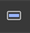 新建按钮。
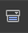 新建下拉框。
 新建进度条。
新建进度条。 新建拖动条。
新建拖动条。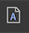 新建字体。
 新建动画。
新建动画。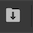 导入素材。从文件管理器/访达中导入。
 保存当前文档。
保存当前文档。 保存所有文档。
保存所有文档。 发布。默认功能是发布当前的活跃包（如果编辑器焦点在资源库，则活跃包是指资源库当前选中的资源所在的包；如果编辑器焦点在文档视图，则活跃包是指当前正在编辑的组件所在的包）。这个功能可以通过偏好设置的选项改变为发布所有的包或者发布所有修改过但未发布的包。
发布。默认功能是发布当前的活跃包（如果编辑器焦点在资源库，则活跃包是指资源库当前选中的资源所在的包；如果编辑器焦点在文档视图，则活跃包是指当前正在编辑的组件所在的包）。这个功能可以通过偏好设置的选项改变为发布所有的包或者发布所有修改过但未发布的包。仅发布定义。如果用户没有修改图片、动画、字体等素材，而仅仅修改了界面布局之类，可以只发布定义，也就是不重新生成纹理集。这样可以提升发布速度。但如果包的内容不是非常多，这个提升并不显著。
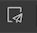 打开发布设置对话框。
 进入测试模式，显示测试界面。
进入测试模式，显示测试界面。 重新启动测试。仅在测试模式下有效。
重新启动测试。仅在测试模式下有效。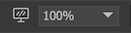 设定舞台缩放比例，背景色，辅助线等。调整舞台比例除了通过这里的下拉框选择外，还可以通过以下几种方式：
- 按住Ctrl/Cmd键同时滚动鼠标滚轮；
- 使用快捷键Ctrl/Cmd+加号或减号；
- 使用快捷键Ctrl+1可以恢复100%比例。
点击左边屏幕图标弹出以下对话框：

背景颜色舞台的背景颜色。画布颜色组件的背景颜色。如果组件需要与众不同的背景颜色，可以在组件属性里设置。显示组件边缘虚线在文档里用虚线显示组件的包围。显示对齐提示线当移动或改变元件尺寸时，如果元件的上下左右边缘和其他元件对齐时，会有绿色的提示线提示。每个文档使用单独的缩放比例如果不勾选，则所有文档共用缩放比例设置；如果勾选，则每个文档使用单独的缩放比例设置，例如编辑文档A时，将文档缩放设置为80%，切换到编辑文档B，则缩放比例自动恢复为100%，再切换回文档A，缩放比例自动恢复为80%。
 切换当前项目的分支。点击左边图标可以打开分支设置对话框。
切换当前项目的分支。点击左边图标可以打开分支设置对话框。 切换当前项目的语言。点击左边图标可以打开语言设置对话框。
切换当前项目的语言。点击左边图标可以打开语言设置对话框。
资源库
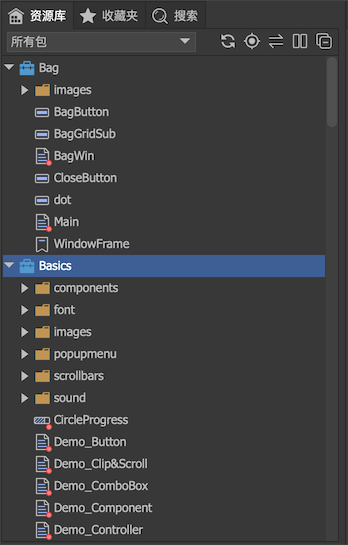
资源库视图里采用树状结构显示。顶层节点是包，每个包下面可以创建文件夹。
一般操作
导入将图片、声音、动画、文字等素材从文件管理器/访达中拖动到资源库，完成资源的导入。也可以直接将素材放置到包目录里，然后点击刷新按钮。支持将另外项目的包直接拷入到assets目录。移动资源可以在各个文件夹或者各个包之间随意拖动，不会破坏资源之间的引用关系。文件夹也可以拖动。快速定位当焦点在库视图时，在键盘上连续按下字母，可以快速定位到当前目录下指定名称的资源。例如，连续按下abc，则定位到名称以“abc”开头的第一个资源；如果是中文字符，则只需按下拼音的第一个字母。例如，连续按下csb，则定位到名称以“测试包”开头的第一个资源。重命名按下F2可修改资源名称。
工具栏
 检查所有包的package.xml，看是否被外部修改，如果有，则重新载入包；同时在文件系统里检查所有已打开的包，如果有资源放置在包目录下，但不在包中的，则导入到包。
检查所有包的package.xml，看是否被外部修改，如果有，则重新载入包；同时在文件系统里检查所有已打开的包，如果有资源放置在包目录下，但不在包中的，则导入到包。 在库中定位当前活动文档对应的组件。
在库中定位当前活动文档对应的组件。 与编辑器连接。激活这个功能后，当活动文档发生切换时，会同时在库中选中活动文档对应的组件。
与编辑器连接。激活这个功能后，当活动文档发生切换时，会同时在库中选中活动文档对应的组件。  切换两栏视图。库视图支持两种结构，单栏和两栏。单栏就是传统的树结构；两栏则由左边的树和右边的列表组成。
切换两栏视图。库视图支持两种结构，单栏和两栏。单栏就是传统的树结构；两栏则由左边的树和右边的列表组成。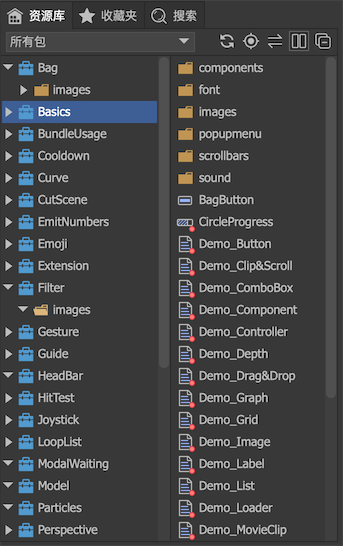
全部收缩。
右键菜单
属性修改资源的属性，对图片、动画这些资源，支持多选。例如，选定了多个图片后，点击属性，弹出如下对话框：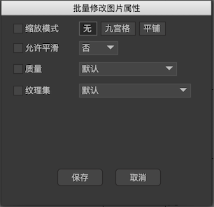
这个功能对文件夹同样有效。选中文件夹后，点击属性，弹出如下对话框：
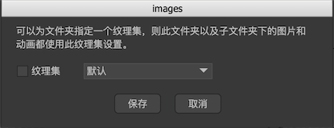
复制复制选中的资源。提示：复制、粘贴功能支持跨项目，同时打开两个项目后，就可以互相复制粘贴。移动至点击后弹出一个对话框用于选择移动的目标位置。粘贴粘贴已复制的内容以及他们引用的未导出的资源到当前位置。如果粘贴时有同名的情况，会有这样一个提示：
重命名重命名同名的资源。替换覆盖同名的资源。跳过不进行粘贴操作，如果粘贴的内容中含有对该资源的引用，则同时修改引用。举例：现准备粘贴组件A和图片B，A组件里放置了图片B。粘贴的目标位置已经含有同名资源dest/B，如果选择跳过，则最后粘贴的只有组件A，而且在新的A组件里，B图片对应的是dest/B。
粘贴全部粘贴已复制的内容以及他们引用的所有资源到当前位置。更新资源使用新的资源替换当前选定的资源。也可以在文件管理器/访达中直接替换文件，后者适合批量操作。设置为导出设置资源为导出。包内的每个资源都有一个是否导出的属性，已导出的资源的图标右下角有一个小红点。一个包只能使用其他包设置为已导出的资源，而设置为不导出的资源是不可访问的。同时，只有设置为导出的组件才可以使用代码动态创建。在文件管理器（访达）中打开在文件管理器（或访达）中定位选中的资源。注意，如果资源路径中含有空格，则可能定位失败。创建分支详见分支功能里的介绍。
包分组
当库面板里的包比较多时，查找东西比较麻烦。编辑器提供了将包分组的功能。
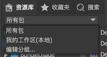
点击编辑分组，显示对话框：
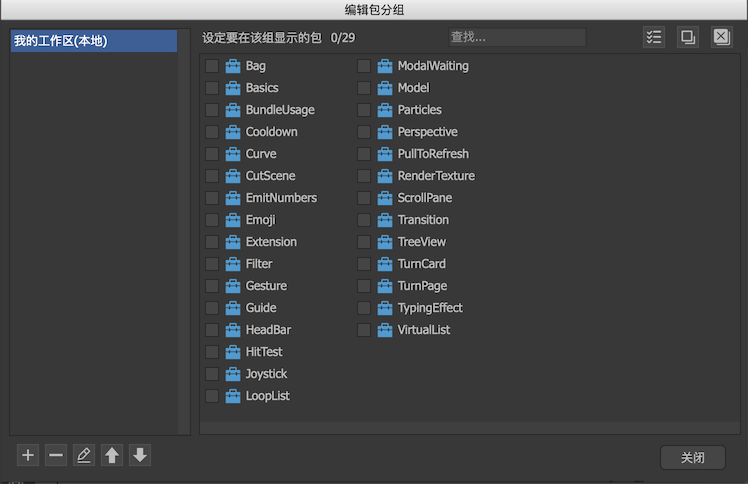
左边列表可以对分组进行增删改和调整显示顺序；右侧列表选择在该分组中的包。
特别的，我的工作区（本地）是一个特别的分组，这个分组不可删除不可改名，它的设置保存在用户本机中，不会保存到项目的settings里，因此不会与团队共享。它专用于记录个人工作任务。
收藏夹
收藏夹提供了一个快速访问常用组件的功能。可以将一些常用的组件或资源放置在收藏夹里，便于快速访问。
在资源库里右键单击一个或多个资源，然后在右键菜单中选择“加入收藏夹”，就可以将资源加入收藏夹。
显示列表

这里显示的是组件的显示列表。按显示顺序排列，列表中越往下的元件显示在越前面。可以在列表中直接拖拽改变元件改变它们在显示列表中的位置。
 展开或者收起所有组
展开或者收起所有组 重命名当前选定的元件
重命名当前选定的元件 屏蔽显示控制器。屏蔽后所有被显示控制器隐藏的内容都会显示出来。参考这里。
屏蔽显示控制器。屏蔽后所有被显示控制器隐藏的内容都会显示出来。参考这里。- 屏蔽关联系统。屏蔽后，当手动修改元件坐标和尺寸时，关联系统不会起作用。例如，A关联了B的位置，你想移动B向A靠近，但由于关联系统的作用，B和A的距离始终保持不变，所以很难完成操作。这时你可以屏蔽关联系统再操作。操作完成后，记得解除屏蔽。
 隐藏元件。点击工具栏按钮则隐藏所有元件，单击每行对应位置的圆点则隐藏指定的元件。这个隐藏功能是编辑辅助功能，不影响运行时UI表现。例如一个元件遮住了另一个元件，你可以用这个功能临时隐藏上方的元件。
隐藏元件。点击工具栏按钮则隐藏所有元件，单击每行对应位置的圆点则隐藏指定的元件。这个隐藏功能是编辑辅助功能，不影响运行时UI表现。例如一个元件遮住了另一个元件，你可以用这个功能临时隐藏上方的元件。 锁定元件。点击工具栏按钮则锁定所有元件，单击每行对应位置的圆点则锁定指定的元件。这个锁定功能是编辑辅助功能，不影响运行时UI表现。例如一些元件不希望在编辑过程中误操作改变位置或尺寸等，那么可以锁定它们。
锁定元件。点击工具栏按钮则锁定所有元件，单击每行对应位置的圆点则锁定指定的元件。这个锁定功能是编辑辅助功能，不影响运行时UI表现。例如一些元件不希望在编辑过程中误操作改变位置或尺寸等，那么可以锁定它们。
动效

这里显示的是组件的动效列表。
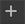 创建新的动效。创建后将组件立刻进入动效编辑模式。
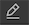 重命名动效。
 复制动效。复制后动效列表会增加一个内容完全相同的新动效。
复制动效。复制后动效列表会增加一个内容完全相同的新动效。
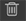 删除动效。
时间轴

- 时间轴和播放头位置。时间显示的单位是秒。
- 参与动效的各个元件和属性。左边显示的是元件名称和类型，右边显示的是属性名称。要在此增加新项目，可以在舞台上点击元件，然后在弹出的右键菜单中选择属性。
- 各个属性的时间轴。
 表示关键帧，
表示关键帧， 表示两个关键帧之间使用插值动画，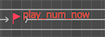红色小红旗则表示这个关键帧有Label，可以通过代码按名称访问。
表示两个关键帧之间使用插值动画，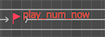红色小红旗则表示这个关键帧有Label，可以通过代码按名称访问。 - 信息显示区。
FPS动效的帧频。可以在这里修改。frame当前播放头在第几帧。time当前播放头的时间，单位是秒。
- 时间轴放大/缩小。向右拖动，时间轴可编辑的长度增加。例如滑块在最左边时，时间轴最大只显示30秒，如果你要制作几分钟的内容，那么可以把滑块往右拖。
时间轴操作:
单选鼠标左键点击一个帧。多选按住CTRL可增加选择，按住SHIFT可选择一个范围。或者直接在空白处按下鼠标左键不松开然后移动选择一个范围。拖动直接拖动选区到其他位置。如下面动图演示：
右键菜单：

转换为关键帧转换当前帧为关键帧。清除关键帧将关键帧变成普通帧。插入帧插入一个帧，快捷键是Ctrl+I，该帧后的关键帧都依次后移。删除帧删除一个帧，快捷键是Ctrl+D，该帧后的关键帧都依次前移。创建Tween在两个关键帧之间建立一个Tween。删除Tween删除两个关键帧之间的Tween。
右键菜单2：

复制时间轴复制时间轴。粘贴时间轴将复制的时间轴粘贴到选定的时间轴。源和目标应该具有相同的属性。删除时间轴删除选定的时间轴。更改目标对象修改时间轴的目标对象。
引用
查询一个资源被其他资源引用的情况，或者查询一个资源引用其他资源的情况。并且可以替换查询结果里的引用。
在资源库视图中，选中某个资源后，在右键菜单选择“查询依赖关系”，可以激活引用视图。

查询依赖我的资源查询我依赖的资源后者一般用于组件。- 可以在此拖入需要操作的资源。
- 点击下拉箭头可以切换为替换模式。点击后出现如下界面：

在下方的输入框拖入希望替代的资源，然后点击替换。注意，要先查询后才能替换。 - 查询结果列表。
搜索

输入关键字，搜索名称里含有关键字的资源。关键字不区分大小写。
控制台

显示软件输出的提示、警告和错误信息。
- 提示信息。
 警告信息。这类信息不影响软件的正常使用，但建议按信息的提示去解决问题。
警告信息。这类信息不影响软件的正常使用，但建议按信息的提示去解决问题。 错误信息。建议通过社区向开发商报告这类信息。
错误信息。建议通过社区向开发商报告这类信息。
预览
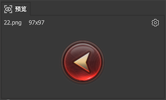
预览界面显示当前资源库选中资源的缩略图。
点击右上角弹出如下菜单：
为组件生成预览可以切换是否为组件生成缩略图。在一些低配置电脑上可以取消这个功能以提高软件运行速度。
检查器
点击舞台中任意一个或多个元件，编辑器右侧将显示对应的属性面板。如果你点击舞台的空白处（不选中任何东西），则显示的是容器组件的属性面板。

后续介绍各个资源类型使用方法时再详细介绍这里的属性含义。
文档视图
侧工具栏
选择模式。
 自由滚动模式。特别的，在选择模式下，按住空格就可以临时切换为自由滚动模式，释放空格就可以恢复为选择模式。
自由滚动模式。特别的，在选择模式下，按住空格就可以临时切换为自由滚动模式，释放空格就可以恢复为选择模式。
 文本控件。
文本控件。
 富文本控件。
富文本控件。
 图形控件。
图形控件。
 列表控件。
列表控件。
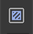 装载器控件。
 为当前选中的元件创建一个组合。
为当前选中的元件创建一个组合。
 取消当前组合。
取消当前组合。
 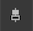 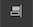
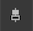 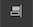  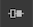 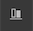
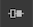 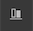 
 对齐操作。选定多个元件后，再点击这里的按钮，可以执行对应的对齐功能。例如选定两个元件后，点击左右居中，则两个元件将设置为中线对齐。如果只选择了一个元件，则该元件对容器组件执行对应的对齐功能。例如，选定一个元件后，点击左右对齐，则元件将移到容器组件的中间位置。又例如，选定一个元件后，点击相同宽度，则元件的宽度将设置为与容器组件相同。
对齐操作。选定多个元件后，再点击这里的按钮，可以执行对应的对齐功能。例如选定两个元件后，点击左右居中，则两个元件将设置为中线对齐。如果只选择了一个元件，则该元件对容器组件执行对应的对齐功能。例如，选定一个元件后，点击左右对齐，则元件将移到容器组件的中间位置。又例如，选定一个元件后，点击相同宽度，则元件的宽度将设置为与容器组件相同。

 可以将选定的元件安排均匀行距、均匀列距或者表格的方式排列。
可以将选定的元件安排均匀行距、均匀列距或者表格的方式排列。
控制器工具栏

点击加号可以增加新的控制器。点击控制器名称可以进入控制器编辑界面。点击控制器的各个页面按钮切换页面。
舞台
舞台是组件的编辑区域。添加内容到舞台的方法有：
- 在侧工具栏上点击基础控件，然后点击舞台。
- 从资源库或收藏夹中直接拖拽资源到编辑区域。
- 可直接粘贴剪贴板中的文字或图片。如果是图片，会先导入到资源库，再自动放置到舞台上。
- 可以从系统的文件管理器或者访达中直接拖入资源。如果该资源是位于assets目录下的，也就是说是包里的资源，那么不会发生资源重复导入到资源库的情况。
中间不同于周边颜色的是组件的主要显示区域。虽然你并不需要把所有内容都放置到组件区域内，因为默认情况下，超出组件区域的内容依然会被显示，但组件的大小仅由组件区域决定，而不会计算所有孩子的包围。某些特别的功能，例如滤镜，只对组件区域生效，所以建议把内容尽量放置在组件区域内。
常用的舞台操作有：
选定点击一个元件单选，按住SHIFT点击多个元件多选。点击空白处取消所有选择。在空白处按下并拖动进行框选。移动按住元件拖动，如果拖动时按住SHIFT，则移动限制在垂直方向或者水平方向。使用键盘上、下、左、右箭头键可以移动选定的元件，每按一次移动1像素，如果同时按下SHIFT键，则移动加速，每次移动10像素。缩放拖拽选定框边缘的8个把柄，可以改变元件的宽度和高度。如果拖拽把柄的同时按住SHIFT键，则强制保持长宽比。组合选定多个元件后，按CTRL+G建立一个组合。
舞台右键菜单：
交换位置将选定的两个元件交换位置。替换元件可以将当前选中的元件替换成另外一个元件，位置大小等所有属性都会保留。转换为组件可以将当前选中的一个或多个元件替换成一个单独的组件，这个组件的内容包含选中的内容，选择的内容则被清除。转换为位图可以将当前选中的一个或多个元件替换成一个单独的图片，这个图片的内容由选中的内容绘制而成，选择的内容则被清除。生成的图片自动加入资源库中。在库中显示在库中高亮显示当前选中的元件。
测试界面

测试界面由以下几个部分组成：
- 点这里退出测试模式。
- 设置适配测试参数的地方。
- 控制器列表。点击控制器的各个页面按钮切换页面。
- 这里显示组件运行时的形态。
- 各个功能视图。用户可以按使用习惯将它们拖动到不同位置，也可以关闭。右键点击面板标题栏，在右键菜单中选择关闭即可。如果要重新打开，在“主菜单->视图”里操作。测试模式下默认显示动效视图和控制台视图。
适配测试

- 如果当前设计的组件需要进行适配测试，可以勾选“适配测试”选项。
- 打开全局适配参数的设置。第一次使用适配测试前应该进行全局适配参数的设置。
- 适应屏幕设置。注意：这里的设置只用于适配测试，实际运行时顶层组件在尺寸和位置，需要用代码设置。
全屏指组件铺满屏幕，这时组件尺寸与逻辑屏幕尺寸相等。适应高度，左右居中以组件的高度与逻辑屏幕高度的比例为基准，调整组件的宽度。例如，如果组件高度是逻辑屏幕高度的1/2，适配后组件高度与逻辑屏幕高度相等（放大2倍），则组件宽度也设置为逻辑屏幕宽度的2倍。无论水平方向是不足还是溢出，组件的位置都设置在逻辑屏幕的中心。适应宽度，上下居中以组件的宽度与逻辑屏幕宽度的比例为基准，调整组件的高度。例如，如果组件宽度是逻辑屏幕宽度的1/2，适配后组件宽度与逻辑屏幕宽度相等（放大2倍），则组件高度也设置为逻辑屏幕高度的2倍。无论垂直方向是不足还是溢出，组件的位置都设置在逻辑屏幕的中心。
- 测试的设备。提示：可以在“项目设置-适配测试-设备配置”里增加其他设备。
- 横屏和竖屏切换。
适配测试时请注意：如果你在动效播放的过程中改变屏幕大小，而这个动效有涉及到带适配设置的元件，那么动效可能播放异常。所有请不要在动效播放的过程中改变屏幕大小。